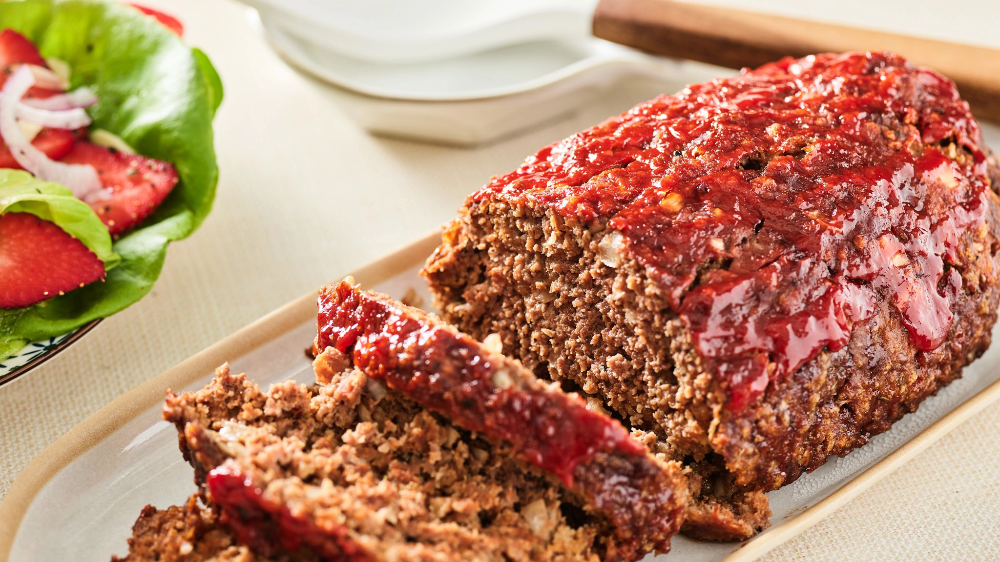

Meatloaf

This meatloaf is rich and hearty slice of comfort, made with tender ground beef blended with
caramelized onions and carrots with just enough breadcrumbs to hold it together without losing that juicy, melt
in your mouth texture.As it bakes, the top forms a slightly crisp, savory crust brushed with a glossy
layer of tangy ketchup or smoky glaze, bubbling at the edges and locking in the moisture. Cut into it and you'll see the steam rise,
carrying the scent of roasted spices and slow-cooked beef; every bite is juicy, warm, and deeply satisfying, the kind of rustic flavor
that feels both familiar and indulgent.
Ingredients
- 11/2 pounds ground beef
- 1 large egg
- 1 onion, chopped
- 1 cup milk
- 1 cup dried bread crumbs
- salt and pepper to taste
- 1/3 cup ketchup
- 2 tablespoons brown sugar
- 2 tablespoons prepared mustard
Directions
- Prepare Ingredients. Preheat oven to 350 degrees(175 degrees C)
Lightly grease a 9x5 inch loaf pan.
- Put ground beef, onion, milk, bread crumbs, and egg in a large bowl.
Mix, season with salt and pepper. Transfer into prepared loaf pan.
-
Mix ketchup, brown sugar, and mustard together in a small bowl until well
combined; pour over meatloaf and spread evenly over the top.
- Bake in the preheated oven for 1 hour or until no longer pink.
- Serve hot and enjoy!